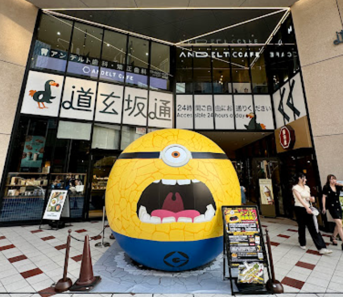
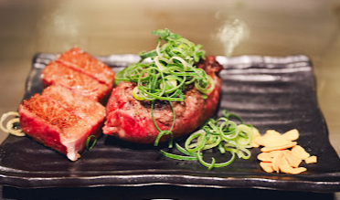
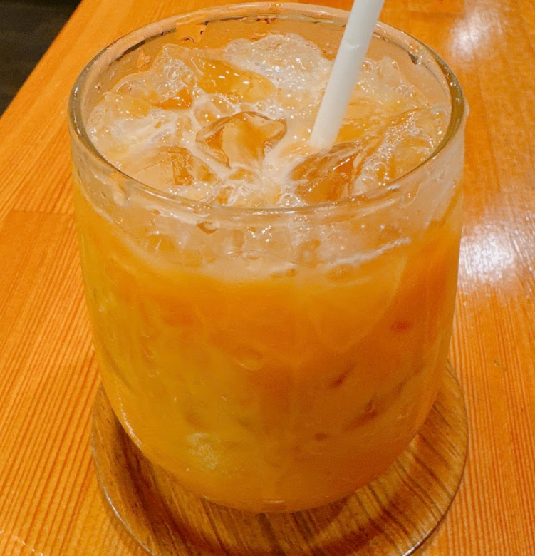
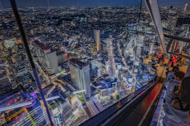

| 時間 | 活動 | 說明 | 備註 |
|---|---|---|---|
| 09:30 | 起床 | 吃個Lawson買的早餐 | |
| 10:00 | 前往涉谷 | 道玄坂通 |  道玄坂通 |
| 12:30 | 吃午餐 | 極味屋-澀谷PARCO店 |  極味屋 澀谷PARCO店 |
| 14:30 | 逛潮潮店 奶茶店 |
FREAK'S STORE Shibuya Kenyan Shibuya |
 FREAK'S STORE Shibuya  Kenyan Shibuya |
| 17:00 | 前往涉谷SKY | 看涉谷夜景 |  涉谷SKY |
| 19:00 | 吃晚餐 | Lawson頂一下? | 吃一點清淡的啦 |
| 21:00 | 回飯店休息 | 休息 | 飯店資訊 |